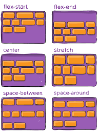

Treinamento Alura - Trilha React Compass UOL
Olá! Sou o André Lúcio de Oliveira, futuro desenvolverdor full-stack e graduando do curso de Sistemas de Informação no Centro Universitário UniAcademia-Juiz de Fora-MG.
Este trabalho apresenta um sumário das funcionalidades requeridas nos módulos de aprendizado da trilha React.JS..
Qualquer dúvida é só chamar pelo whatsapp.

ATIVIDADES DO MÓDULO GIT-GITHUB CONTROLE DE VERSAO
Foram criadas quatro branches no repositório: AndreLucio-patch-1, AndreLucio-patch-2 e AndreLucio-config e develop
Realizados diversos commits e merges entre as branches para a branch principal (main),
As descrições das alterações feitas seguem o padrão de commit semântico.
-
GIT

-
GITHUB

ATIVIDADES DO MÓDULO HTML E CSS3
Os estilos usados no css se inspiram nos tópicos apresentados nas unidades 1 e 2 do curso da Alura.
Elementos html e css reproduzem o layout da barbearia alura
Adicionado o arquivo reset.css
-
HTML-5

-
CSS-3

ATIVIDADES DO MÓDULO FLEXBOX
São explorados os conceitos de Flexbox e Flex Item.
As divs são emparelhadas com "flex-direction: row"
Foi adicionado um efeito de "Paralaxe" na página.
Screenshots da conclusão dos respectivos jogos.
Aguardando aquela estrelinha prometida na nota...
✬ ✬ ✬ ✬ ✬
FLEXBOX FROGGY
FLEXBOX DEFENSE
ATIVIDADES DO MÓDULO JAVASCRIPT
Reproduzida a mesma tabela para cálculo de IMC apresentada no curso de JavaScript Alura
Calculadora de IMC
| Peso(kg) | Altura(m) | Gordura Corporal(%) | IMC |
|---|---|---|---|
| 98 | 1.81 | 20 | 0 |